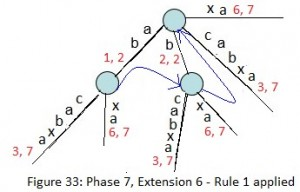
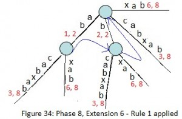
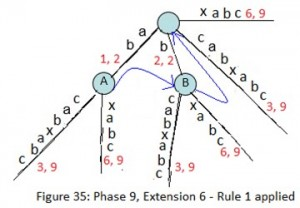
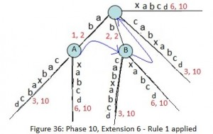
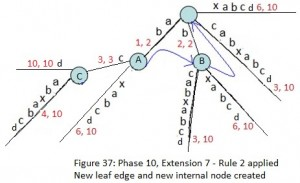
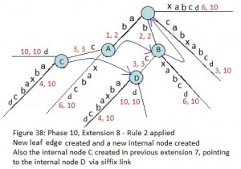
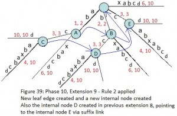
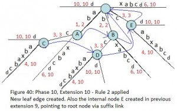
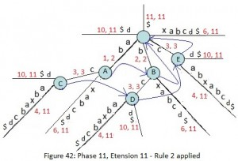
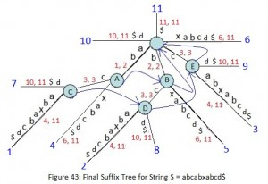

This article is continuation of following four articles:
Ukkonen’s Suffix Tree Construction – Part 1
Ukkonen’s Suffix Tree Construction – Part 2
Ukkonen’s Suffix Tree Construction – Part 3
Ukkonen’s Suffix Tree Construction – Part 4
Please go through Part 1, Part 2, Part 3 and Part 4, before looking at current article, where we have seen few basics on suffix tree, high level ukkonen’s algorithm, suffix link and three implementation tricks and some details on activePoint along with an example string “abcabxabcd” where we went through six phases of building suffix tree.
Here, we will go through rest of the phases (7 to 11) and build the tree completely.
*********************Phase 7*********************************
In phase 7, we read 7th character (a) from string S
- Set END to 7 (This will do extensions 1, 2, 3, 4, 5 and 6) – because we have 6 leaf edges so far by the end of previous phase 6.

- Increment remainingSuffixCount by 1 (remainingSuffixCount will be 1 here, i.e. there is only 1 extension left to be performed, which is extensions 7 for suffix ‘a’)
- Run a loop remainingSuffixCount times (i.e. one time) as below:
- If activeLength is ZERO [activePoint in previous phase was (root, x, 0)], set activeEdge to the current character (here activeEdge will be ‘a’). This is APCFALZ. Now activePoint becomes (root, ‘a’, 0).
- Check if there is an edge going out from activeNode (which is root in this phase 7) for the activeEdge. If not, create a leaf edge. If present, walk down. In our example, edge ‘a’ is present going out of activeNode (i.e. root), here we increment activeLength from zero to 1 (APCFER3) and stop any further processing.
- At this point, activePoint is (root, a, 1) and remainingSuffixCount remains set to 1 (no change there)
At the end of phase 7, remainingSuffixCount is 1 (One suffix ‘a’, the last one, is not added explicitly in tree, but it is there in tree implicitly).
Above Figure 33 is the resulting tree after phase 7.
*********************Phase 8*********************************
In phase 8, we read 8th character (b) from string S
- Set END to 8 (This will do extensions 1, 2, 3, 4, 5 and 6) – because we have 6 leaf edges so far by the end of previous phase 7 (Figure 34).

- Increment remainingSuffixCount by 1 (remainingSuffixCount will be 2 here, i.e. there are two extensions left to be performed, which are extensions 7 and 8 for suffixes ‘ab’ and ‘b’ respectively)
- Run a loop remainingSuffixCount times (i.e. two times) as below:
- Check if there is an edge going out from activeNode (which is root in this phase 8) for the activeEdge. If not, create a leaf edge. If present, walk down. In our example, edge ‘a’ is present going out of activeNode (i.e. root).
- Do a walk down (The trick 1 – skip/count) if necessary. In current phase 8, no walk down needed as activeLength < edgeLength. Here activePoint is (root, a, 1) for extension 7 (remainingSuffixCount = 2)
- Check if current character of string S (which is ‘b’) is already present after the activePoint. If yes, no more processing (rule 3). Same is the case in our example, so we increment activeLength from 1 to 2 (APCFER3) and we stop here (Rule 3).
- At this point, activePoint is (root, a, 2) and remainingSuffixCount remains set to 2 (no change in remainingSuffixCount)
At the end of phase 8, remainingSuffixCount is 2 (Two suffixes, ‘ab’ and ‘b’, the last two, are not added explicitly in tree explicitly, but they are in tree implicitly).
*********************Phase 9*********************************
In phase 9, we read 9th character (c) from string S
- Set END to 9 (This will do extensions 1, 2, 3, 4, 5 and 6) – because we have 6 leaf edges so far by the end of previous phase 8.

- Increment remainingSuffixCount by 1 (remainingSuffixCount will be 3 here, i.e. there are three extensions left to be performed, which are extensions 7, 8 and 9 for suffixes ‘abc’, ‘bc’ and ‘c’ respectively)
- Run a loop remainingSuffixCount times (i.e. three times) as below:
- Check if there is an edge going out from activeNode (which is root in this phase 9) for the activeEdge. If not, create a leaf edge. If present, walk down. In our example, edge ‘a’ is present going out of activeNode (i.e. root).
- Do a walk down (The trick 1 – skip/count) if necessary. In current phase 9,walk down needed as activeLength(2) >= edgeLength(2). While walk down, activePoint changes to (Node A, c, 0) based on APCFWD (This is first time APCFWD is being applied in our example).
- Check if current character of string S (which is ‘c’) is already present after the activePoint. If yes, no more processing (rule 3). Same is the case in our example, so we increment activeLength from 0 to 1 (APCFER3) and we stop here (Rule 3).
- At this point, activePoint is (Node A, c, 1) and remainingSuffixCount remains set to 3 (no change in remainingSuffixCount)
At the end of phase 9, remainingSuffixCount is 3 (Three suffixes, ‘abc’, ‘bc’ and ‘c’, the last three, are not added explicitly in tree explicitly, but they are in tree implicitly).
*********************Phase 10*********************************
In phase 10, we read 10th character (d) from string S
- Set END to 10 (This will do extensions 1, 2, 3, 4, 5 and 6) – because we have 6 leaf edges so far by the end of previous phase 9.

- Increment remainingSuffixCount by 1 (remainingSuffixCount will be 4 here, i.e. there are four extensions left to be performed, which are extensions 7, 8, 9 and 10 for suffixes ‘abcd’, ‘bcd’, ‘cd’ and ‘d’ respectively)
- Run a loop remainingSuffixCount times (i.e. four times) as below:
- Check if there is an edge going out from activeNode (Node A) for the activeEdge(c). If not, create a leaf edge. If present, walk down. In our example, edge ‘c’ is present going out of activeNode (Node A).
- Do a walk down (The trick 1 – skip/count) if necessary. In current Extension 7, no walk down needed as activeLength < edgeLength.
- Check if current character of string S (which is ‘d’) is already present after the activePoint. If not, rule 2 will apply. In our example, there is no path starting with ‘d’ going out of activePoint, so we create a leaf edge with label ‘d’. Since activePoint ends in the middle of an edge, we will create a new internal node just after the activePoint (Rule 2)
-
*********************Extension 7*********************************

- Decrement the remainingSuffixCount by 1 (from 4 to 3) as suffix “abcd” added in tree.
- Now activePoint will change for next extension 8. Current activeNode is an internal node (Node A), so there must be a suffix link from there and we will follow that to get new activeNode and that’s going to be ‘Node B’. There is no change in activeEdge and activeLength (This is APCFER2C2). So new activePoint is (Node B, c, 1).
- Now in extension 8 (here we will add suffix ‘bcd’), while adding character ‘d’ after the current activePoint, exactly same logic will apply as previous extension 7. In previous extension 7, we added character ‘d’ at activePoint (Node A, c, 1) and in current extension 8, we are going to add same character ‘d’ at activePoint (Node B c, 1). So logic will be same and here we a new leaf edge with label ‘d’ and a new internal node will be created. And the new internal node (C) of previous extension will point to the new node (D) of current extension via suffix link.
-
The newly created internal node c (in above Figure) in current extension 7, will get it’s suffix link set in next extension 8 (see Figure 38 below).
*********************Extension 8*********************************

- Decrement the remainingSuffixCount by 1 (from 3 to 2) as suffix “bcd” added in tree.
- Now activePoint will change for next extension 9. Current activeNode is an internal node (Node B), so there must be a suffix link from there and we will follow that to get new activeNode and that is ‘Root Node’. There is no change in activeEdge and activeLength (This is APCFER2C2). So new activePoint is (root, c, 1).
- Now in extension 9 (here we will add suffix ‘cd’), while adding character ‘d’ after the current activePoint, exactly same logic will apply as previous extensions 7 and 8. Note that internal node D created in previous extension 8, now points to internal node E (created in current extension) via suffix link.
-
Please note the node C from previous extension (see Figure 37 above) got it’s suffix link set here and node D created in current extension will get it’s suffix link set in next extension. What happens if no new node created in next extensions? We have seen this before in Phase 6 (Part 4) and will see again in last extension of this Phase 10. Stay Tuned.
*********************Extension 9*********************************

- Decrement the remainingSuffixCount by 1 (from 2 to 1) as suffix “cd” added in tree.
- Now activePoint will change for next extension 10. Current activeNode is root and activeLength is 1, based on APCFER2C1, activeNode will remain ‘root’, activeLength will be decremented by 1 (from 1 to ZERO) and activeEdge will be ‘d’. So new activePoint is (root, d, 0).
- Now in extension 10 (here we will add suffix ‘d’), while adding character ‘d’ after the current activePoint, there is no edge starting with d going out of activeNode root, so a new leaf edge with label d is created (Rule 2). Note that internal node E created in previous extension 9, now points to root node via suffix link (as no new internal node created in this extension).
*********************Extension 10*********************************

- Decrement the remainingSuffixCount by 1 (from 1 to 0) as suffix “d” added in tree. That means no more suffix is there to add and so the phase 10 ends here. Note that this tree is an explicit tree as all suffixes are added in tree explicitly (Why ?? because character d was not seen before in string S so far)
- activePoint for next phase 11 is (root, d, 0).
-
Internal Node created in previous extension, waiting for suffix link to be set in next extension, points to root if no internal node created in next extension. In code implementation, as soon as a new internal node (Say A) gets created in an extension j, we will set it’s suffix link to root node and in next extension j+1, if Rule 2 applies on an existing or newly created node (Say B) or Rule 3 applies with some active node (Say B), then suffix link of node A will change to the new node B , else node A will keep pointing to root
We see following facts in Phase 10:
- Internal Nodes connected via suffix links have exactly same tree below them, e.g. In above Figure 40, A and B have same tree below them, similarly C, D and E have same tree below them.
- Due to above fact, in any extension, when current activeNode is derived via suffix link from previous extension’s activeNode, then exactly same extension logic apply in current extension as previous extension. (In Phase 10, same extension logic is applied in extensions 7, 8 and 9)
- If a new internal node gets created in extension j of any phase i, then this newly created internal node will get it’s suffix link set by the end of next extension j+1 of same phase i. e.g. node C got created in extension 7 of phase 10 (Figure 37) and it got it’s suffix link set to node D in extension 8 of same phase 10 (Figure 38). Similarly node D got created in extension 8 of phase 10 (Figure 38) and it got its suffix link set to node E in extension 9 of same phase 10 (Figure 39). Similarly node E got created in extension 9 of phase 10 (Figure 39) and it got its suffix link set to root in extension 10 of same phase 10 (Figure 40).
- Based on above fact, every internal node will have a suffix link to some other internal node or root. Root is not an internal node and it will not have suffix link.
*********************Phase 11*********************************
In phase 11, we read 11th character ($) from string S
- Set END to 11 (This will do extensions 1 to 10) – because we have 10 leaf edges so far by the end of previous phase 10.


- Increment remainingSuffixCount by 1 (from 0 to 1), i.e. there is only one suffix ‘$’ to be added in tree.
- Since activeLength is ZERO, activeEdge will change to current character ‘$’ of string S being processed (APCFALZ).
- There is no edge going out from activeNode root, so a leaf edge with label ‘$’ will be created (Rule 2).

- Decrement the remainingSuffixCount by 1 (from 1 to 0) as suffix “$” added in tree. That means no more suffix is there to add and so the phase 11 ends here. Note that this tree is an explicit tree as all suffixes are added in tree explicitly (Why ?? because character $ was not seen before in string S so far)
Now we have added all suffixes of string ‘abcabxabcd$’ in suffix tree. There are 11 leaf ends in this tree and labels on the path from root to leaf end represents one suffix. Now the only one thing left is to assign a number (suffix index) to each leaf end and that number would be the suffix starting position in the string S. This can be done by a DFS traversal on tree. While DFS traversal, keep track of label length and when a leaf end is found, set the suffix index as “stringSize – labelSize + 1”. Indexed suffix tree will look like below:

In above Figure, suffix indices are shown as character position starting with 1 (It’s not zero indexed). In code implementation, suffix index will be set as zero indexed, i.e. where we see suffix index j (1 to m for string of length m) in above figure, in code implementation, it will be j-1 (0 to m-1)
And we are done !!!!
Data Structure to represent suffix tree
How to represent the suffix tree?? There are nodes, edges, labels and suffix links and indices.
Below are some of the operations/query we will be doing while building suffix tree and later on while using the suffix tree in different applications/usages:
- What length of path label on some edge?
- What is the path label on some edge?
- Check if there is an outgoing edge for a given character from a node.
- What is the character value on an edge at some given distance from a node?
- Where an internal node is pointing via suffix link?
- What is the suffix index on a path from root to leaf?
- Check if a given string present in suffix tree (as substring, suffix or prefix)?
We may think of different data structures which can fulfil these requirements.
In the next Part 6, we will discuss the data structure we will use in our code implementation and the code as well.
References:
http://web.stanford.edu/~mjkay/gusfield.pdf
Ukkonen’s suffix tree algorithm in plain English
This article is contributed by Anurag Singh. Please write comments if you find anything incorrect, or you want to share more information about the topic discussed above


{kind=link}
{kind=link}
{kind=link}
{kind=link}
{kind=link}
{kind=link}
{kind=link}
{kind=link}
{kind=link}
{kind=link}